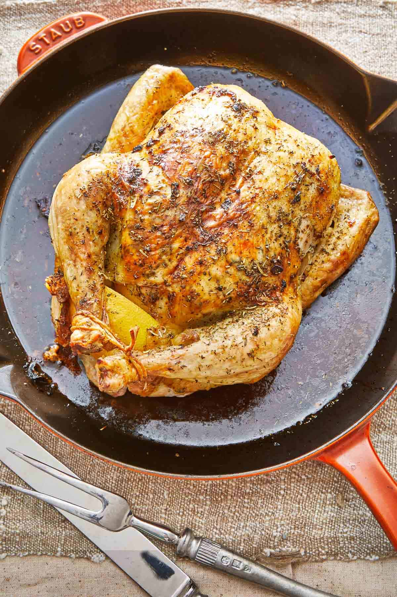

Roasted Whole Chicken
Description
This is a simple approach to roasting a whole chicken. It is an economical and wholesome meal, great for a day when you have some extra cooking time and it will provide leftover meat for use in meals for the next day or two.
There are more complex approaches to make this into a statement meal, but this recipe is for a more pragmatic weeknight dinner option.
Recipe
Ingredients:
- 3-4 pound whole chicken
- ~2 garlic cloves
- Lemon (for juice and zest)
- Olive oil or butter (for coating the chicken)
- Onion, medium white or yellow
- Spices
- Salt
- Italian Seasoning
- Black Pepper
Instructions:
- Prepare the rub: Form a paste with the minced garlic and salt by mashing it together on a cutting board. Combine the paste in a small bowl with 1 tablespoon of lemon juice, lemon zest, italian seasoning, and black pepper.
- Dry the chicken: Use paper towels to pat the chicken dry inside and out, removing as much moisture as you possibly can. Removing moisture is importand to achieve a golden crispy skin
- Season the chicken: Place the chicken on a large plate, and loosen the skin from the breast meat and legs. Divide the italian seasoning rub into thirds. Then rub it on the flesh, skin, and inside of the cavity of the chicken. Then, stuff the chicken with the rest of the lemon and the quartered onion.
- Truss the chicken: Truss the chicken by tucking the wings under the bird. Then, wrap twine under and adound the chicken, crossing it over the breast like and X and tying the legs together.
If you are short on time, you can skip this step but it does help the chicken cook more evenly.
- (Optional) Air dry the chicken: Store the chicken, uncovered, in the fridge for 24 hours. This removes additional moisture from the skin making it extra crispy, while giving the salt a chance to impact the protein in the flesh. But if you are planning to cook it that day, just skip this and the next step and put it in the oven instead.
- (Optional) Revive the chicken: Your chicken will look emaciated the next day when you remove it from the fridge. Simply rub it with more olive oil, salt, and italian seasoning and it will be restored.
- Roast: Transfer the chicken to a cast iron skilet or roasting pan, and let it roast until a thermometer reads 165 deg F in the thickest part of the breast. This is typically ~25 minutes per pound. Once fully cooked allow the chicken to rest for 5-10 minutes befoe serving.